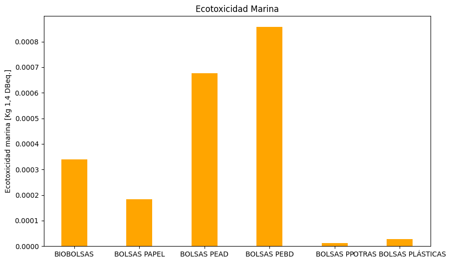
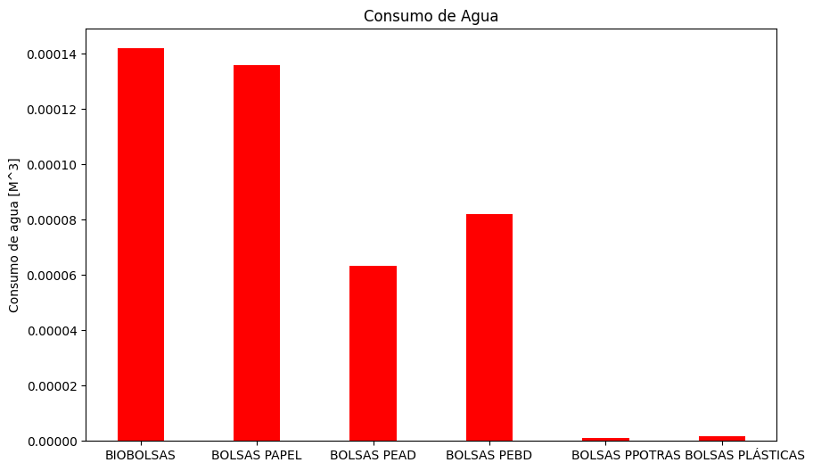
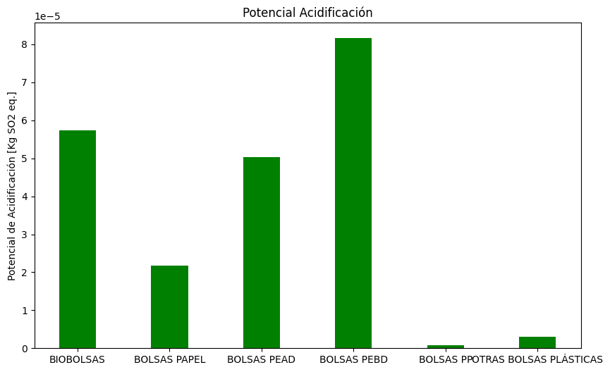
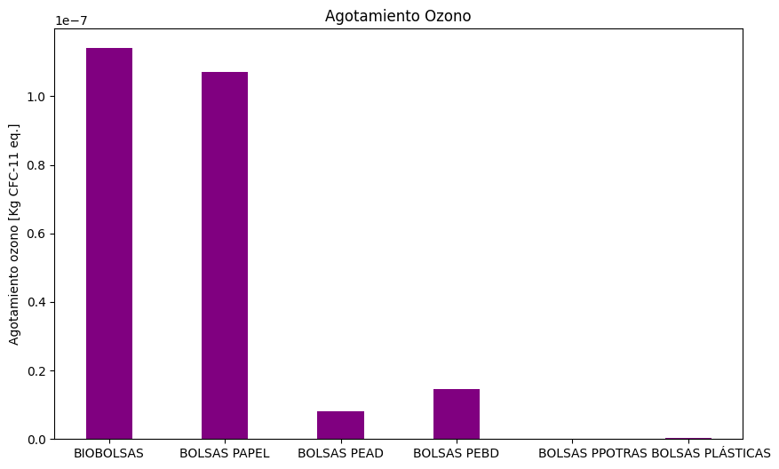

En medio de la pandemia, 3 de agosto de 2020, entró en vigencia la medida “Chao Bolsas Plásticas” que prohíbe a los comercios entregar este tipo de bolsas a sus clientes. Para disminuir el consumo indiscriminado de plástico en Chile, con el fin de cuidar el medio ambiente. Nudo ecológico plantea una visión crítica y ambientalista acerca de la ley en cuestión.
Jaime es un hombre chileno de 30 años, y está apurado, porque su esposa le encargó unos ingredientes para cocinar el almuerzo. Corre por el supermercado, se dirige a la caja para pagar, lleva todo los productos en sus manos. Termina de pagar, y aggg… ¡olvidó traer la bolsa! Bueno, no es primera vez que le pasa desde que implementaron la nueva ley. En fin, está apurado, asi que trata de llevar todo en sus manos, se le van cayendo las cosas en el camino, pero finalmente logra llegar a destino y cocinar. Pero se queda pensando ¡Qué comodo era cuando iba a comprar y le daban bolsas! Jaime entiende que hay que cuidar el medioambiente, pero se pregunta: ¿qué tan eficaz es prohibir el uso de bolsas plásticas?
Seguramente, si eres ciudadano chileno, y tienes más de 15 años, alguna vez te pasó algo similar a lo de Jaime, y tienes la misma duda que el, Ahora te lo explico! recuerdas la época en que nos quedamos en casa por mucho tiempo y usábamos mascarilla? Bueno, En Chile, la Ley 21.100 “Chao Bolsas Plásticas” comenzó a regir el 3 de agosto de 2020, sí, plena pandemia, vaya recuerdos. En fin, esta impide que todo tipo de negocio (ya sea grande, mediano o pequeño), entregue o venda bolsas plásticas a sus clientes para el transporte de mercadería… pobre Jaime, por eso tuvo que llevarse las cosas en la mano.
*Excluyendo los envases primarios o productos envasados de fábrica y que su uso sea necesario por razones higiénicas o para evitar el desperdicio de alimentos.
Y ojo! Quienes no cumplan con esta medida podrán ser multados con cinco Unidades Tributarias Mensuales (UTM) (cerca de 320 mil pesos chilenos) por cada bolsa plástica de comercio entregada.
¡Cuidado con entregar bolsas, te puede salir caro!
Como Jaime, te puedes preguntar… ¿por qué el Gobierno adoptó esta medida? El objetivo era evitar el uso indiscriminado e innecesario de plástico, generando conciencia al cambiar hábitos y reducir la generación de residuos. Y adivina! Chile fue el primer país en eliminar las bolsas plásticas en Latinoamérica! Pero… también es el que tiene una cifra récord: alcanza el primer lugar en la generación de basura plástica por habitante en el continente, así que no hay que sentirse muy orgullosos. En el mundo, son muchos los países que han tomado medida contra las bolsas de plástico, prohibir su uso es bastante popular. Chile, al igual que otros países, ptohíbe el uso de bolsas plásticas a nivel nacional, lo que nos posiciona como uno de los países más estrictos en el escenario internacional
Según datos del Ministerio del Medio Ambiente, hasta agosto de 2022, la ley ha evitado fabricar 11.500 millones de bolsas plásticas en Chile, ¡todo un éxito para el país y para el ecosistema!
Son muchos los gobiernos que han adoptado medidas en cuanto a la regulación de bolsas plásticas. En el siguiente gráfico, podemos ver que existen 6 tipos de leyes alrededor del mundo. Estas son: ban (prohibición), fee (se incluye una tarifa a las bolsas, para decinsentivar el uso de bolsas plásticas), ban+fee (Ciertos productos plásticos están prohibidos (ban), mientras que al mismo tiempo se aplican cargos económicos (fee) a otros productos plásticos permitidos), ban/fee hybrid (Combina medidas de prohibición (ban) y tarifas (fee) en una legislación. Puede tomar diferentes formas, como permitir ciertos productos plásticos con tarifas asociadas, o aplicar prohibiciones a ciertos usos específicos de plásticos, junto a tarifas para otros usos). Estas dos últimos tipos de leyes, se diferencian por el grado de integración y combinación de estas medidas y cómo se aplican en la práctica, pero tienen el mismo objetivo. Comprehensive (se refiere a una legislación integral que abarca una amplia gama de aspectos o áreas relacionadas con esta temática. Incluye concientización por ejemplo), other (se refiere a otro tipo de regulación).
El scope, es el alcance de aplicación que tiene una ley. Y a la derecha se observa el número de cada tipo de ley, alrededor del mundo. Es interesante observar que muchos países no quedan ajenos, y que, si bien no cuentan con regulación obligatoria en todos los casos, como lo es en Chile, sí se toman diferentes tipos de medida para combatir la contaminación del plástico.
.png)
Para que entiendas sobre los principales tipos de bolsas, chequea este resumen de los principales
Desde la implementación de la ley, el uso de bolsas PP (Polipropileno) las cuales se utilizan para embalajes y otras cosas ha disminuido considerablemente, pero sigue siendo la segunda bolsa con más uso. Al descender el uso de las bolsas PP, las cuales son creadas a partir de petróleo, ascendieron dos tipos de bolsa. Que de igual forma, son fabricadas de plásticos, con la diferencia que son de polietileno (PEAD y PEBD). Las bolsas de polietileno de baja densidad (PEBD) se encuentran en el tercer lugar en las bolsas más usadas.

Seguramente, más de una vez has escuchado acerca del impacto del plástico en el medioambiente, pero posiblemente no recuerdas las abismantes cifras: cerca de 7.000 millones de los 9.200 millones de toneladas de plástico producidas entre los años 1950 y 2017 terminaron convertidas en desechos plásticos. Las bolsas de plástico constituyen un gran problema para el medioambiente, ya que es difícil y costoso reciclarlas, y muchas de ellas terminan en vertederos, donde demoran alrededor de 300 años en biodegradarse. Se descomponen en partículas diminutas que contaminan el agua y suelo, e ingresan en la cadena alimenticia de los animales. La contaminación e impacto de sustancias a especies u organismos vivos, se llama ecotoxicidad. Las bolsas plásticas comunes son las segundas que menos influyen en el aumento de la ecotoxicidad marina, mientras que las bolsas PEAD y PEBD, que en el gráfico de uso se reflejaba que habían tenido un aumento desde la aplicación de la ley, son las que más influyen en la contaminación marina. Pero eso no es todo, las bolsas de papel, que tras la prohibición de las bolsas de plástico se mostraron como la mejor solución y alternativa, muestran niveles de ecotoxicidad aún más altos que las bolsas de plástico, es decir, el fundamento de la ley 21.100 tampoco se cumple a cabalidad.
Antes de la implementación de la ley, se consumían aproximadamente 3.400 millones de bolsas plásticas al año en Chile. En el primer año de aplicación de la ley, se estima que se dejaron de utilizar casi un 65% de las bolsas plásticas. Sin embargo, las cifras de reciclaje por parte de la población, son muy bajas (según la Asociación Nacional de la Industria del Reciclaje, solo el 27% de las bolsas plásticas se recicla realmente, mientras que el 73% termina en rellenos sanitarios o contamina el medio ambiente), y se ha generado un aumento en la producción de bolsas de cartón, lo que sigue generado daño medioambiental.
La sequía es un problema que se da por la falta de lluvia, o la lluvia necesaria, en un prolongado periodo de tiempo. Este fenómeno puede tener impactos importantes en la agricultura, el suministro de agua potable y los ecosistemas, afectando negativamente al medio ambiente. En Chile, un 72% de la superficie del país sufre sequía en algún grado. El consumo de agua desmedido empeora las condiciones ya que, implica una disminución del recurso. Provocando que las fuentes de agua se vayan secando generando que haya menos agua disponible para riego. Las bolsas de cartón han sido la alternativa ideal para el reemplazo de bolsas plásticas desde la implementación de esta ley. Pero ¿Ha sido realmente ideal? Muchos negocios han reemplazado las bolsas de plástico por aquellas de cartón/ papel. Según el gráfico la fabricación de estas bolsas gasta una cantidad de agua mayor que en la generación de las bolsas plásticas. Por lo tanto, el cambio a estas bolsas no fue una solución que apuntó a lo que fundamentaba la creación de la ley: la protección del medio ambiente.
Por otra parte, este potencial de acidificación, mide la capacidad de contribuir a la acidificación del ambiente de un compuesto químico. Medir esto sirve para calcular el impacto de las emisiones de gases y las partículas ácidas en el ambiente. Mientras más alta sea la cantidad de kilogramos de dióxido de azufre equivalente (Kg SO2 eq.), más potencial de acidificación tiene, y, por lo tanto, es más nocivo es ese material en el aire o en el agua. Las bolsas plásticas siguen estando bajo el nivel de contaminación que las bolsas de papel.
En este gráfico, se mide el potencial de cambio climático para analizar cuanto afectan los diferentes gases de efecto invernadero en un periodo de 100 años. Finalmente, lo que hace es comparar la capacidad de retención de calor de un gas específico con la del CO2 (dióxido de carbono), es decir un gas que no es común con uno común de efecto invernadero que persiste en la atmósfera. Según los datos que muestra el gráfico los gases que emiten las bolsas plásticas comunes emiten gases que vendrían a ser menos dañinos en este periodo de 100 años, que aquellos gases que emiten las bolsas de papel.
.png)
El agotamiento de ozono es la medición de la capacidad de algunas sustancias químicas de destruir la capa de ozono. Para este cálculo se compara el impacto de ciertas sustancias en su destrucción de la capa de ozono con las de los clorofluorocarbonos, que se usan en refrigerantes y en los aerosoles, los cuales son los más comunes en el agotamiento de la capa de ozono y se consideran una referencia estándar. Las bolsas plásticas nuevamente presentan niveles de agotamiento de ozono considerablemente más bajos que las bolsas de papel.
En este punto, espero que entiendas que, no porque el gobierno prohíba el uso de bolsas plásticas, se está generando un enorme beneficio para el medioambiente. Está claro que por algo se parte, e implica ciertos esfuerzos por parte de la sociedad (Recordemos a Jaime de camino a su casa, mientras se le caían los ingredientes, porque olvidó la bolsa). Sin embargo, reemplazarlas por bolsas de cartón (lo que es muy común en algunos negocios), no es la mejor de las opciones.
A modo de resumen, ya que seguro te mareaste con tanta información, debes entender que, la implementación de la ley “Chao bolsas plásticas”, trajo consigo beneficios en cuanto a la reducción del uso de estas, lo que, sin duda, beneficia al ambiente. Sin embargo, en reemplazo de estas, se ha impulsado la generación de bolsas con alto contenido plástico, que dañan de igual forma al medioambiente, y se ha impulsado el uso de bolsas de cartón, que como vimos, son igual o más dañinas. La ley es defectuosa ya que provoca que se generen más bolsas de cartón, genera incomodidad a la hora de ir a comprar y el reciclaje de bolsas plásticas es insuficiente.